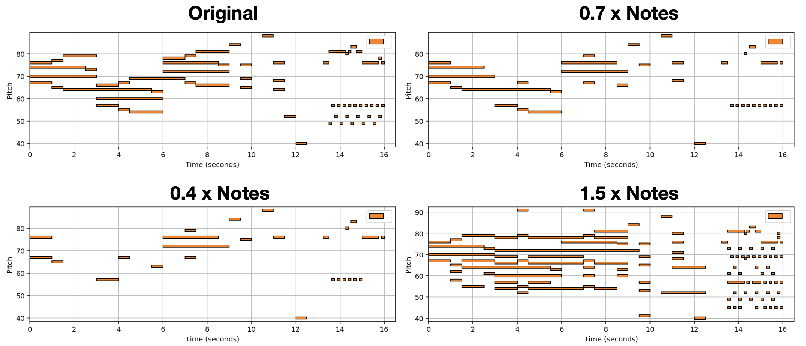

VaryCHarm: A Method to Automatically Vary the Complexity of Harmonies in Music¶
(In Progress) In this post we showcase some results, of a new method tasked with varying the harmonic complexity of music automatically. In addition, we propose some metrics for evaluation, and design a few baseline methods.
Introduction¶
Music complexity can vary but trained and untrained listeners are still able to recognize the original music. In order to discover a method to vary musical complexity while maintaining we first formulate the problem of varying music complexity and propose a method to preserve general harmonic structure and melody while varying the number of notes. To do this, we find a compressed representation of pitch while simultaneously training on symbolic chord predictions. We test different pitch Autoencoders with various sparsity constraints, and evaluate our results by plotting chord recognition accuracy with increasing and decreasing number of notes, observations in relation to music theory, and by analysing absolute and relative musical features with a probabilistic framework.
Problem Defenition¶
It is clear automatically varying the complexity of music has valuable applications. But how do we approach this problem without supervision? In words, we want to add or remove notes without diverging too much from the original “feeling” of music. In math we write:
The Problem of Varying Harmonic Information:
We denote Symbolic music information as piano rools where the input is information with a fixed history length \(H\) as a matrix \(X_t \triangleq x_{t-H:t} \in \{0,1\}^{P \times H}\). For simplicity, we denote \(\mathcal{X} = \{0,1\}^{P \times H}\) as the input space.
Then the goal is to learn a mapping \(f_\theta(X_t \mid \eta) \rightarrow \hat{X}_t \in \mathcal{X}\) parameterized by \(\theta\) such that \(\hat{X}_t\) summarizes (or further ornament) the original piece of music \(X_t\), given a hyper-parameter \(\eta \in [0,1]\) that controls the sparsity level of \(\hat{X}_t\). More specifically, we consider the following optimization:
\[ \min_{\theta} \mathcal{D}\bigg(f_\theta(X_t \mid \eta),~X_t\bigg) ~~\text{s.t.}~~||f_\theta(X_t \mid \eta)||_0 \leq \eta HP.\]
How do we solve this problem?¶
In order to reconstruct pitch vectors with the extra criteria of maintaining theoriginal chord/harmonic functionality, we propose a combined loss of MSE on pitch vector reconstruction and Cross Entropy on symbolic chord targets. The reconstruction should be such that we do not lose the ability to map the originalchords but the information bottleneck serves to generalize pitch functionality
Conclusion¶
Our results indicate the end-to-end autoencoder-BiLSTM Lifetime method outperforms a simple music theory baseline, and a regular auto encoder according to the metrics discussed. The current method does have a few limi- tations. Namely we are compressing pitch information and most of the added embellishments are added vertically and depend on build on the existing rhythm. However, we believe this method and evaluation scheme provides some ground work for exploring rhythmic components to potentially be extended.